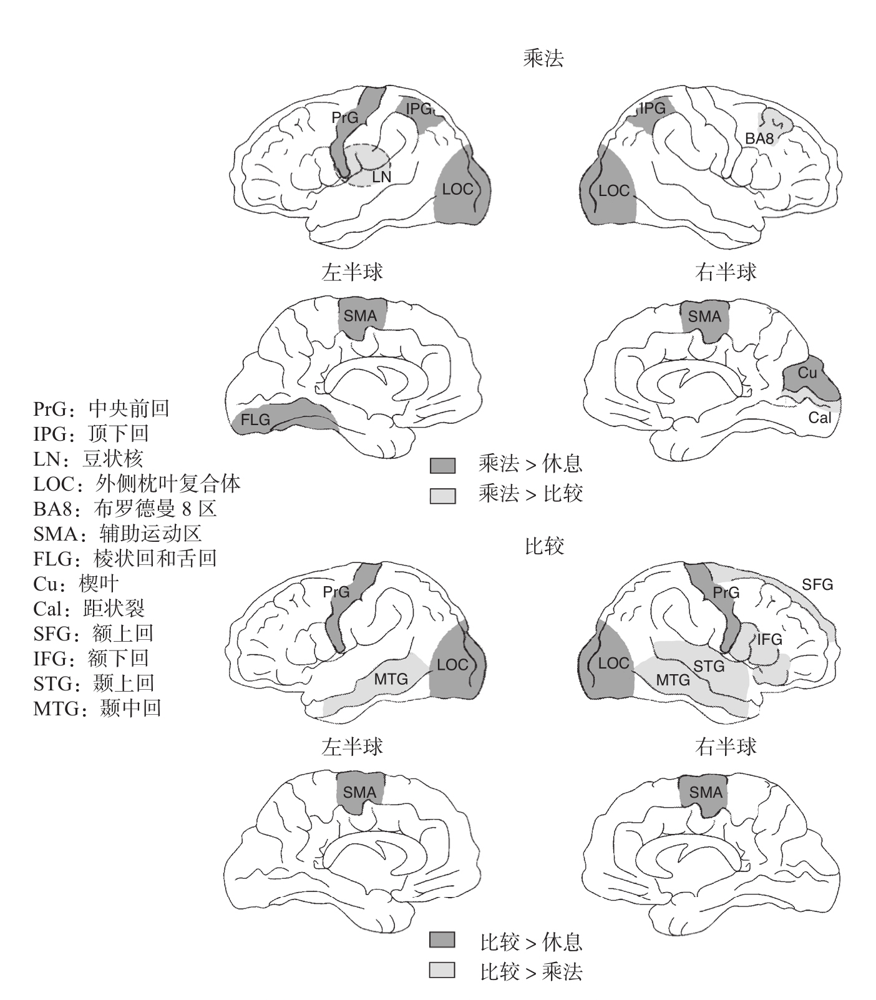

罗兰和弗里贝里的实验仅考察了一个复杂的算术任务，目的是确定与算术有关的脑区，这只能算是第一步。神经心理分离技术使我们能够预期更加精细的脑区划分。由于算术运算不同，得到激活的皮层网络理应存在很大的差别。在20世纪90年代早期，我和我的同事率先对这一假设进行了检验，我们考察了大脑在数字比较和乘法运算时激活模式的变化10。
这项实验是在奥赛一家装备有先进的脑部新陈代谢测量设备的医疗研究中心进行的。8名医学院的学生志愿参与了实验。他们在早上到达医院采集脑部的高分辨率磁共振解剖结构图像。下午晚些时候，通过PET技术，我们采集了他们在加工数字时处于激活状态的脑区的细节图像。使用该技术获取数字加工时的脑区活动图像，在研究史上尚属首次。
还记得N先生吗？一个不能进行乘法运算，但是可以说出两个数字中哪个数量比较大的患者。我们研究的目的是，考察负责乘法运算的皮层回路与负责数字比较的皮层回路在脑区分布上是否存在不同，就像我们根据N先生的实验结果所假设的那样。我们向被试呈现一些成对的数字，被试对它们进行大小比较或者进行乘法心算。在这两种情况下，运算的结果（不管是其中较大的数字还是它们的乘积）都必须以不出声的方式给出，嘴唇不能出现明显的动作。我们将进行这两个任务时的脑血流量与被试处于休息状态时扫描的结果进行了对比。
正如我们所预期的，与休息状态相比，一些脑区在进行乘法运算和大小比较时有同样程度的激活。这些脑区很可能负责两种任务共有的一些过程，例如提取视觉信息（枕叶皮层）、保持目光固定以及言语产出的内部模拟（运动辅助区和中央前皮层）。
对数量加工至关重要的下顶叶皮层也得到了激活。奇怪的是，在进行乘法运算时，这一区域在大脑两个半球的激活都非常强烈，而在进行数字比较时，激活程度很小，几乎无法探测到。我们的预期与此完全相反：比较任务要求对数量进行加工，而简单的乘法运算只需要言语记忆的参与。我们所使用的乘法问题并不全是简单的，也包含一些像“8×9”或者是“7×6”这样的问题，被试对它们会犹豫甚至可能完全回答不出来。鉴于这种情况，被试在算术事实方面的言语记忆不再可靠，我们推测他们被迫求助于后备策略：更大程度地依赖下顶叶皮层来提供可能的答案。与此相反，我们使用的数字比较任务可能过于简单，因为数字的范围仅仅从1到9，“找出较大的数字”这种任务要求可能太过简单，以至于无法引起下顶叶较大程度地激活。也可能我们留给被试做反应的时间太长，这种情况可能导致脑部的激活被弱化到了无法被探测到的程度。无论如何，从结果来看，下顶叶皮层的激活程度与被试所进行数字任务的难度成正比。
然而，当我们对乘法运算和数字比较任务中的脑区激活情况进行比较时，最有趣的结果出现了。颞叶、前额叶、顶叶的一些区域在大脑两个半球表现出了明显的不对称。在进行乘法运算时，大脑左半球的皮层激活程度较强，而在数字比较任务中，皮层的激活平均分布在两个半球，甚至转移到了右半球（见图8-4）。这个发现印证了数学领域的一个观点：乘法运算部分依赖位于大脑左半球的语言能力，而数字比较并非如此。与乘法运算相反，数字比较不需要死记硬背。幼儿或者是动物，不需要接受明确教学，就能够自然地形成数量大小的心理表征。因此，大脑不需要把数字转化为语言的形式再进行比较。功能性脑成像也证明了数量大小的比较是一个非语言的过程，它对大脑左右半球的依赖程度相当，并不是更多地依赖于左半球。大脑两个半球都可以对数字进行识别，把它们转化为量的心理表征后再进行比较。

PET揭示了被试在闭眼休息的状态下，在对两个数字进行乘法运算时，以及在对这两个数字进行大小比较时，脑血流量发生变化的广泛皮层网络。
图8-4 乘法运算及数字比较任务中脑血流量的变化
资料来源：改编自Dehaene et al., 1996。
一个被称为左侧豆状核的皮层下核，在乘法计算时也比在数字比较时显示出更强的激活。我们从第7章中得知，这一区域的损伤会对乘法计算结果和其他言语自动化加工的记忆造成损害。还记得之前介绍过的，忘记了“三九二十七”与字母表的B太太吗？她的脑损伤正是在这个区域。豆状核属于基底神经节，通常认为这一结构负责动作的程序化加工。功能脑成像研究表明，它们同样负责更加精细复杂的认知过程。乘法口诀表在人脑中的存储形式可能是自动化的词序列，因此对它们的回忆是机械化的过程。我们在学校里反复背诵乘法口诀表，它的所有内容都深深地印进了我们的大脑中。这就解释了为什么即使是最熟练的双语者，也选择使用他们学习算术时的语言来进行计算。
乘法和数字比较过程涉及多个脑区，这再次表明算术不是一种仅涉及一个计算中心的颅相学所谓的“能力”，它的每一步操作都需要广泛的皮层网络的参与。与计算机不同，大脑没有一个专门针对算术操作的处理器。为了便于理解，我们可以把它们看成一群各司其职、分工多元化的默默无闻的执行者，单独的某一个只能够完成非常有限的工作，但是作为一个团队，它们能够通过分别负责工作的不同方面，来处理无法单独完成的问题。哪怕是两个数字相乘这样简单的操作，也需要分散于各个脑区的数以百万计的神经元之间的协同。